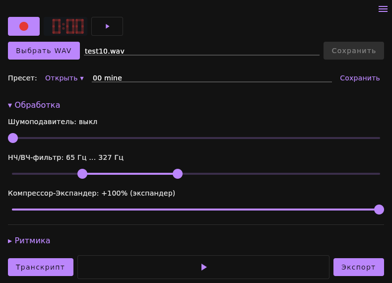

Microphone and WAV
Record inside the program with a “-0:01…0:00” count-in, or open a WAV file. 22,050 Hz — the sample rate the recognition model was trained on.
v2m listens to a recording — from a microphone or a WAV file — and writes the notes down: a polyphonic part with pitch, timing and loudness for every note. You see how it was decided on the spectrogram, fix what needs fixing, and export to MIDI, ABC notation or MusicXML.
Linux x86_64 · Java 17+ · 43 MB · offline, no sign-up
One tool for the whole way from sound to notation — everything is computed on your own computer, nothing goes to a server.
Record inside the program with a “-0:01…0:00” count-in, or open a WAV file. 22,050 Hz — the sample rate the recognition model was trained on.
Hears several notes at once: chords, intervals, several voices. Each note gets a pitch, an onset, a duration and a loudness.
See what the result was built from: spectrogram frames, note boundaries, four colour scales, pitch range and time zoom.
Fix or mute notes and compare processing versions side by side, so you can hear exactly what a setting changed.
Export to MIDI, MIDI with context, ABC notation and MusicXML — ready for a notation editor, a sequencer or a practice notebook.
Noise gate, filters, compressor-expander, rhythm, melody, harmonisation, key and time signature, presets per instrument.
One window: recording or a file, the analysis controls, and the result on the «Spectrum», «Quanta», «Tones» and «ABC» tabs. The interface is in Russian for now.

Three steps. Nothing is installed system-wide: unpack the archive anywhere and start it.
The program and every library it needs, the recognition engine included, are inside. No internet connection is required to work.
v2m-linux-x64-1.0.0.tar.gz · 43 MB
tar -xzf v2m-linux-x64-1.0.0.tar.gz cd v2m-linux-x64-1.0.0
./run.sh
The script checks that Java is present and tells you how to install it if it is not.
Anywhere a melody already sounds but the notes do not exist yet.